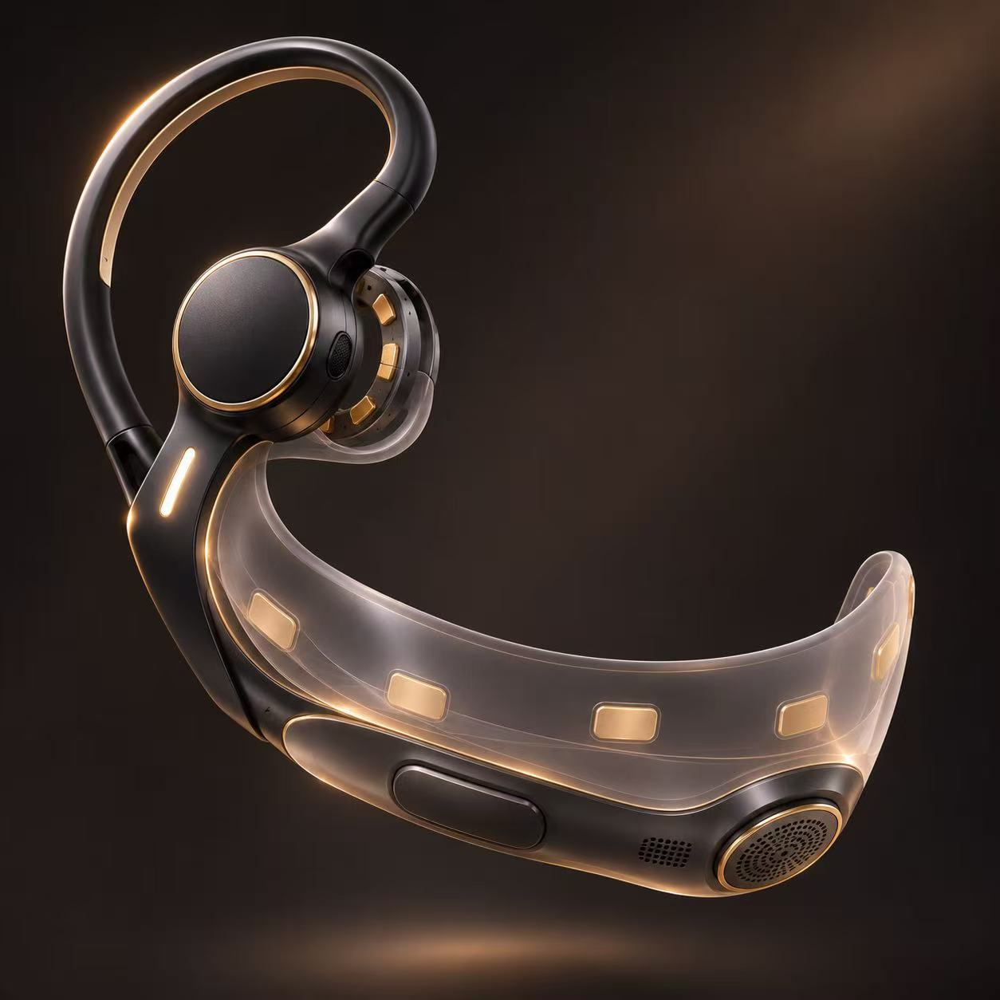
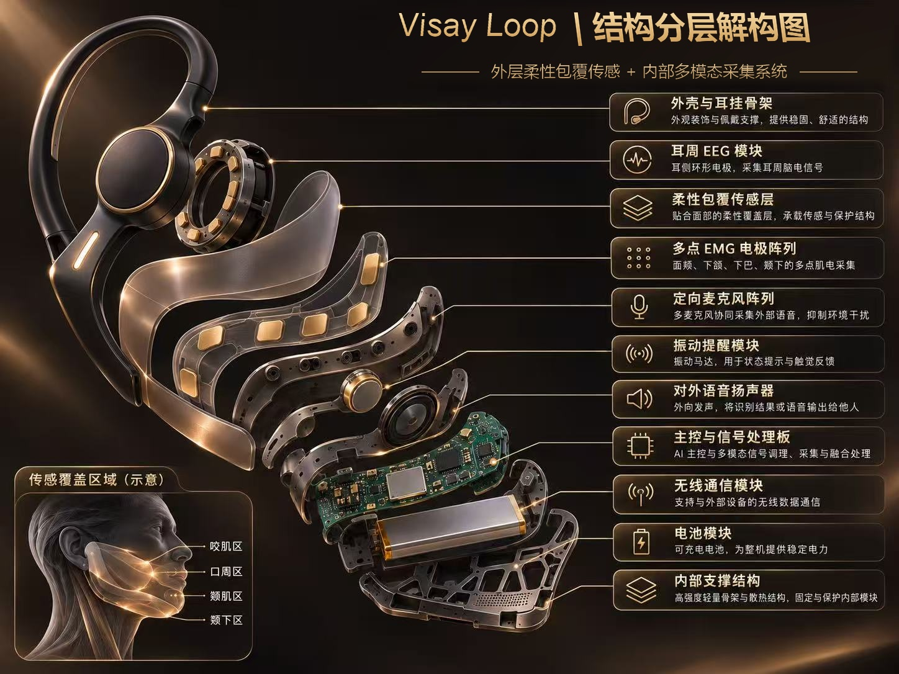

Let silence be heard.
An ear-worn multimodal sensing device. A flexible face-hugging outer layer pairs with internal ear-EEG, multi-point EMG, a directional microphone array, and an outward-facing speaker — linking capture, recognition, and feedback into one complete loop for low-voice and even silent interaction.

Where conventional voice devices only listen for sound, Visay Loop reads facial electromyography (EMG), around-ear electroencephalography (EEG), and external speech at the same time. An AI controller handles capture and sensor fusion, then delivers feedback through vibration and an outward-facing speaker. The soft wrapping layer conforms to the masseter, perioral, zygomatic, and submental regions, while the ear-hook frame carries the load — keeping the sensing modules close to their signal sources without sacrificing stability or comfort. It answers a simple question: how can communication stay natural and understandable when speaking out loud is difficult or impossible?
Four layers of capability, from signal capture to interactive feedback.
The shell and ear-hook frame provide structure while the flexible sensing layer conforms to the face. An internal lightweight high-strength frame handles support and heat dissipation, keeping the device comfortable and stable over long sessions.
The ear-EEG module, multi-point EMG electrode array, and directional microphone array work in concert. The main controller and signal-processing board capture and fuse the data, drawing on a richer set of signals.
A vibration motor handles status cues and haptic feedback, while the outward-facing speaker delivers recognized results or speech to others — closing the loop from capture to recognition to expression.
A wireless module exchanges data with external devices, and a rechargeable battery powers the whole system. Modules are arranged in layers, each with a clear role.
A flexible outer sensing layer plus an internal multimodal capture system — 11 functional modules working together.

Primary facial capture regions indicated in the exploded view, corresponding to the placement range of the multi-point EMG electrodes.
Covers activity of the chewing-related muscle group
Covers mouth-shape and lip movement regions
Covers upper-cheek expression-related regions
Covers the EMG capture region below the chin
Potential scenarios inferred from the product architecture; real-world usability depends on algorithms and full-system validation.
In meetings, libraries, or open offices where speaking loudly is inconvenient, low-voice or silent intent capture and voice output keep the conversation going.
The directional microphone array captures external speech together while suppressing ambient noise for more reliable voice input.
The outward speaker and vibration cues offer a potential assistive path for people with limited speech expression.
The wireless module exchanges data with external devices, positioning Visay Loop as a wearable input node in a multi-device system.
| Form factor | Ear-hook + flexible facial wrapping structure |
|---|---|
| Sensing modules | Ear-EEG module, multi-point EMG electrode array, directional microphone array |
| Feedback | Vibration alerts, outward-facing speaker |
| Processing core | AI controller and signal-processing board (capture and sensor fusion) |
| Connectivity | Wireless communication module for data exchange with external devices |
| Battery | 500 mAh |
| Structural design | Shell & ear-hook frame + flexible wrapping sensing layer + internal support structure |
| Battery life / Weight / Charging | 50 hours; 35 g; Type-C fast charging |
| Warranty | 12 months |